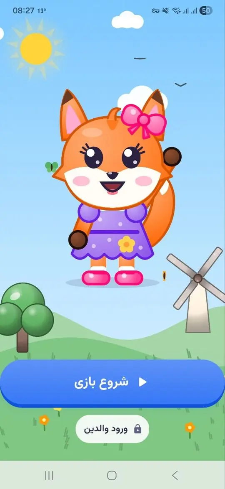

گوشیار
۳ تا ۸ سالبازی شنیداری
بازی صداها؛ تمرین شنیدن و تمرکز
کودک صدای حیوانها، وسایل خانه، طبیعت و موسیقی را میشنود، حدس میزند و ماموریتهای شنیداری را یکییکی کامل میکند.
یک باغ تازه میآید
بازی ساختن و کشف با روباه کوچولو.

پوپو یک بازی ساختن و کشف برای کودکان ۲ تا ۸ ساله است. کودک با روباه کوچولو و دوستانش، خاله خرسی، بانی خرگوش، آقا سنجاب و کوکو، ماجراها را دنبال میکند، چیز میسازد و باغ را کشف میکند.
بازی فصلبهفصل پیش میرود و هر فصل چند بخش دارد. کارگاه، اتاق بازی و نقشهی جشن بزرگ هم کنار ماجراها هست.
پوپو در انتظار تأیید کافهبازار است و بهزودی منتشر میشود. خبرش را اول در اینستاگرام میگذاریم.
هر فصل یک شخصیت و یک داستان دارد.
کودک ابزار برمیدارد و چیز میسازد.
جایی برای چیدن چیزهایی که ساخته است.
تیزر و تصویری از آنچه در راه است.
نگاهی کوتاه به باغ و روباه کوچولو.
روی هر تصویر بزنید تا بزرگ ببینید.
پوپو هنوز منتشر نشده و نظری ندارد. خبرش را در اینستاگرام اعلام میکنیم.
پوپو در انتظار تأیید کافهبازار است. تاریخ انتشار را اول در اینستاگرام اعلام میکنیم.
برای کودکان ۲ تا ۸ ساله.
بازی صداها؛ تمرین شنیدن و تمرکز
کودک صدای حیوانها، وسایل خانه، طبیعت و موسیقی را میشنود، حدس میزند و ماموریتهای شنیداری را یکییکی کامل میکند.
نقاشیات روی کاغذ، جان میگیرد
روی کاغذ واقعی نقاشی بکش، با دوربین اسکن کن و ببین کنار پشمک زنده میشود.
فارسی سوم دبستان با جغد معلم
هر صفحهی کتاب یک درس صوتی دارد؛ با آزمون و کاربرگ در سه سطح.
پوپو در انتظار تأیید کافهبازار است. اعلام انتشار اول در اینستاگرام است.